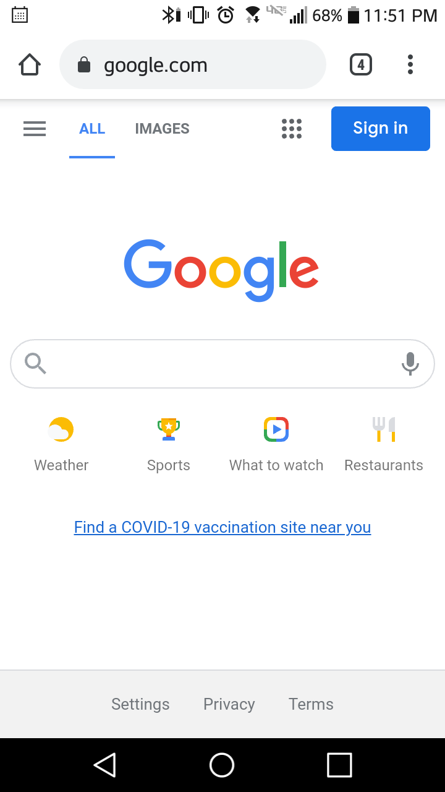

Contrast
Christa McAuliffe Space Center
This is an example of using contrast simply because of the light and dark elements that are used here. The background of this website is generally dark gray or black. However, the text and some of the highlighted elements are very bright. The title of the website is in a white font which is in contrast with the dark background. What this does is it highlights certain elements of the website that the user should look at.
Proximity
YouTube.com
This one is a great example of using Proximity as a design principle. What makes it good is what it does to keep similar features together. On the bottom, you can see all of the features and options that a user can select to improve their experience. At the top you see search options as well as key information about the user account and the website itself. In the main section of the website you have the content of the site all in one place. This keeps the site organized but also allows for a clean user experience.
White Space and Clean Design
Google.com
Now for white space, the example here is google. White space is a tricky thing and too much or too little can be detrimental. However, google is a good example here because it really is a minimalistic approach to content. You can see that for most of the page, it is empty. Except for the main logo, there are few colors on the screen. What this does is it draws the user in to the middle of the screen where the purpose of the site can be achieved. It minimizes distraction and keeps the user focused on what they are doing.